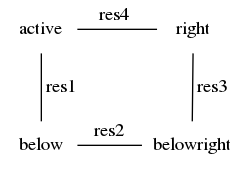

toupy.restoration.unwraptools module¶
-
toupy.restoration.unwraptools.wraptopi(phase, endpoint=True)[source]¶ Wrap a scalar value or an entire array to: [-pi, pi) if endpoint=False (-pi, pi] if endpoint=True (default)
Example
>>> import numpy as np >>> wraptopi(np.linspace(-np.pi,np.pi,7),endpoint=True) array([ 3.14159265, -2.0943951 , -1.04719755, -0. , 1.04719755, 2.0943951 , 3.14159265]) >>> wraptopi(np.linspace(-np.pi,np.pi,7),endpoint=False) array([-3.14159265, -2.0943951 , -1.04719755, 0. , 1.04719755, 2.0943951 , -3.14159265])
-
toupy.restoration.unwraptools.wrap(phase)[source]¶ Wrap a scalar value or an entire array to -0.5 <= a < 0.5.
Note
Created by Sebastian Theilenberg, PyMRR, which is available at Github repository: https://github.com/theilen/PyMRR.git
-
toupy.restoration.unwraptools.distance(pixel1, pixel2)[source]¶ Return the Euclidean distance of two pixels.
Example
>>> distance(np.arange(1,10),np.arange(2,11)) 3.0
-
toupy.restoration.unwraptools.get_charge(residues)[source]¶ Get the residues charges
- Parameters
residues (array_like) – 2D arrays with residues
- Returns
posres (array_like) – Positions of the residues with positive charge
negres (array_like) – Positions of the residues with negative charge
-
toupy.restoration.unwraptools.phaseresidues(phimage, disp=1)[source]¶ Calculates the phase residues 1 for a given wrapped phase image.
- Parameters
phimage (array_like) – Array containing the phase-contrast images with gray-level in radians
disp (bool) – False gives No feedback True gives Text feedback (additional computation)
- Returns
residues – Map of residues (valued +1 or -1)
- Return type
array_like
Note
Note that by convention the positions of the phase residues are marked on the top left corner of the 2 by 2 regions as shown below:
Inspired by PhaseResidues.m created by B.S. Spottiswoode on 07/10/2004 and by find_residues.m created by Manuel Guizar - Sept 27, 2011
References
- 1
R. M. Goldstein, H. A. Zebker and C. L. Werner, Radio Science 23, 713-720 (1988).
-
toupy.restoration.unwraptools.chooseregiontounwrap(stack_array)[source]¶ Choose the region to be unwrapped
- Parameters
stack_array (array_like) – Input stack to be unwrapped
- Returns
rx, ry (tuples) – Limits of the are to be unwrapped
airpix (tuple) – Position of the pixel which should contains only air/vacuum
-
toupy.restoration.unwraptools.unwrapping_phase(stack_phasecorr, rx, ry, airpix, **params)[source]¶ Unwrap the phase of the projections in a stack.
- Parameters
stack_phasecorr (array_like) – Array containing the stack of projection to be unwrapped
ry (rx,) – Limits of the are to be unwrapped in x and y
airpix (list of ints) – Position of pixel in the air/vacuum area
params (dict) – Dictionary of additional parameters
params["vmin"] (float, None) – Minimum value for the gray level at each display
params["vmin"] – Maximum value for the gray level at each display
- Returns
stack_unwrap – Stack of unwrapped projections
- Return type
array_like
Note
It uses the phase unwrapping algorithm by Herraez et al. 2 implemented in Scikit-Image (https://scikit-image.org).
References
- 2
Miguel Arevallilo Herraez, David R. Burton, Michael J. Lalor, and Munther A. Gdeisat, “Fast two-dimensional phase-unwrapping algorithm based on sorting by reliability following a noncontinuous path”, Journal Applied Optics, Vol. 41, No. 35, pp. 7437, 2002